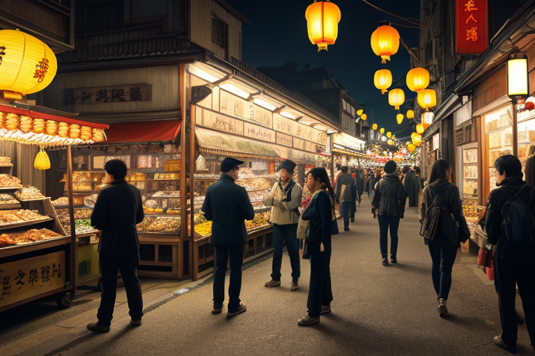
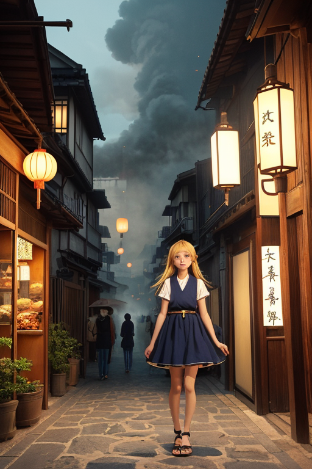
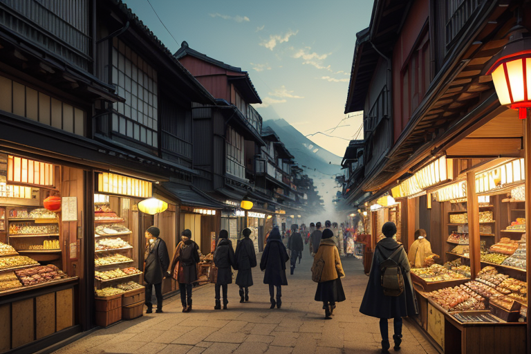
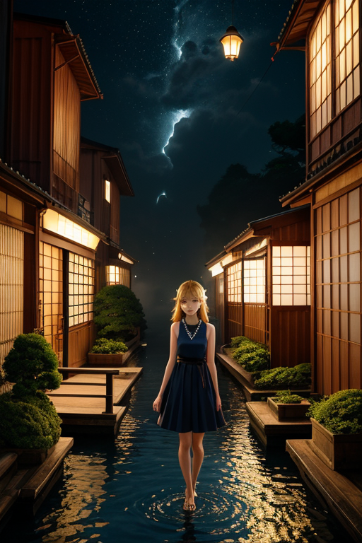
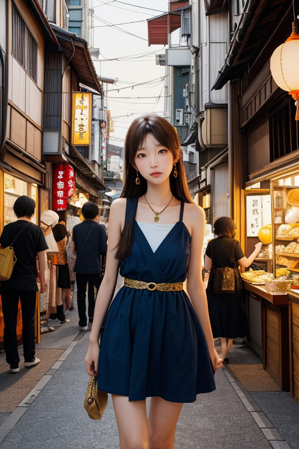

第一章 現実の神奈川
あなたはまだ気づいていない。この土地にも、王がいることを。
横浜中華街の喧噪は、常に熱を帯びている。赤い提灯の下、様々な言語が交錯し、油の香りと甘い匂いが混ざり合う。観光客の笑い声、店先で交わされる駆け引き、重たい食材を運ぶ台車の音。ここでは、異なるものがぶつかり、時に溶け合い、新たな何かを生み出そうとしている。その活気の底に、ごく僅かな「歪み」が潜む。人の欲望の奔流、金の流れの淀み、文化が衝突する際の微かな軋み。それらは、この港町の地盤そのものに、目に見えないひびを生じさせていた。
群青色のスーツを着た一人の男が、その雑踏を静かに見つめていた。カナガリア・ノクス。彼の目には、人々の営みの「流れ」と、その流れが土地に刻む「負荷」が、色の濃淡として映っている。彼は英雄ではない。ただの調整者だ。彼ができるのは、そのひびが決定的な破綻を招く一歩手前で、ほんの少し、圧力を分散させることだけである。

第二章 歪みの兆候
横浜中華街の喧噪は、異なる言語と香料の気配が渾然一体となった熱気そのものだった。カナガリアはその路地の一角に立ち、流れる人々の欲望と期待、そしてほんのわずかな焦りや不安の「色」を読み取っていた。活気はこの町の生命線だが、それは同時に、地盤へと伝わる微細な振動でもあった。
彼の傍らで、妖精ノクシアが囁いた。「観光客の流入、三割増。貨物船の入港間隔、一五パーセント短縮。全てが『混ざり』を加速させています」
混ざることで得られるものは、富と文化と可能性だ。しかし、その速度と密度が、この土地の許容量を静かに圧迫し始めていた。湘南の海から吹く風に、ほのかな鉄の匂いが混じる。それは港の匂いではなく、地中で緩やかに歪みつつある岩盤の、かすかな警告だった。カナガリアは目を閉じ、掌でその「流れ」のベクトルを感じ取る。調整のタイミングは、まだではない。彼に求められるのは、破壊の阻止ではなく、崩壊の一歩手前での、ほんの少しの「間」の創出である。

第三章 王の葛藤
横浜中華街の喧噪は、欲望と活気の結晶だった。人々は異国の香辛料と自らの願望を交換し、笑顔の下に切実な計算を隠していた。カナガリアはその雑踏の只中に立ち、流れる金と情報の「歪み」を感知する。それは経済的な膨張そのものが地殻に与える、微細な圧力だった。
「王よ、この『混ざり』は加速しすぎています」とノクシアが囁く。「人々はより多くを求め、土地はそれに応えようと無理をする」
カナガリアは掌をかざした。彼の役目は流れを止めることではない。止めれば、それは別の破裂を生む。求められるのは、膨張の速度をほんの一瞬遅らせ、圧力が一点に集中する前に分散させる「間」を作ることだ。しかし、その「間」が、どれだけの夢や商機を潰すかという重みが、最近、彼の胸にのしかかる。感情というものが、少しずつわかってきたからだ。
箱根の山々を望みながら、彼は思う。混ざることで得るのは、富と可能性。そして、必ず伴う歪みと危険。守護とは、その全てを否定せず、ただ崩壊の一歩手前で、ほんの少しの呼吸を差し入れることなのか。

第四章 妖精との対話
横浜中華街の路地裏、深夜の厨房で、ミナトラはしらすを炒めていた。隣の鍋では崎陽軒のシウマイの具が煮込まれ、鳩サブレーの甘い香りが混ざる。「混ざることで得るもの？」彼女はフライパンを揺らしながら言った。「新しい味。そして、必ず生まれる『余計なもの』よ」
ノクシアは港の波止場に座り、暗い海を見つめていた。入港する貨物船の灯りが、群青の海に金の筋を引く。「商いとは、欲望の交換です。人が欲しがるものを運び、代わりに何かを奪う。その繰り返しが、この港の鼓動」彼女はため息をついた。「王様が調整する歪みは、この交換が暴走して、全てを飲み込まないための『間』。でも最近、その『間』が、あまりに多くの夢の欠片で満たされている気がして」
カナガリア・ノクスは二人の声を聞きながら、三渓園の池のほとりに立っていた。異国の様式を取り入れた庭園は、完璧な調和などなく、むしろ違和感を抱えながら共存していた。混ざることで得るのは、確かに富や可能性だ。しかし、その過程でこぼれ落ち、すり減り、変質していく無数の「何か」の存在を、彼は無視できなくなっていた。守護とは、混交そのものを守ること。そして、混交が生み出す全ての余剰と損失を、ただ静かに見守ることなのか。

第五章 微調整と余韻
横浜中華街の路地裏で、看板が一枚、蝶番の緩みから微かに傾いていた。通り過ぎる観光客のバッグが、ほんの数ミリ、それに触れるかもしれない瞬間、一陣の風が吹き、バッグの軌道をほんの少しだけ逸らした。看板は揺れず、誰も気づかない。
カナガリア・ノクスは、その場にはいなかった。彼の意志は、港に出入りする船の微妙な間隔、交差点を渡る人々の流れの密度、異なる言語が交錯する喧噪の中での、ほんの一呼吸の間合いに散っていた。混ざることで得るのは、衝突の可能性そのものだ。完全な調和など幻想に過ぎず、彼の役目は、衝突が破壊ではなく、新たなリズムを生むための、僅かな「ずらし」を繰り返すことにある。
湘南の海辺で、子供が転びそうになった足元の砂を、波が一瞬早く撫でて固めた。箱根の路傍で、外国人旅行者が道に迷いかけたその先に、地元の老人が偶然に現れた。誰も気づかない微調整の連鎖。混交の余剰も損失も、全てがこの土地のざわめきとなり、群青と金の波紋は、見えぬままに広がり続ける。
あなたの町にも、王がいる。